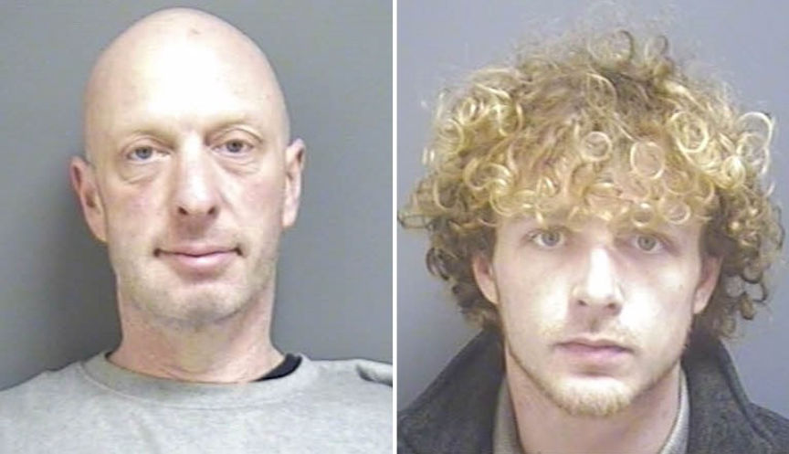
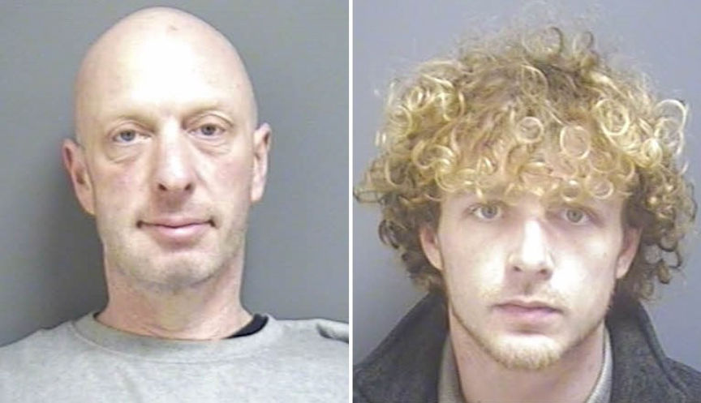

Two Dark Web Drug Dealers Imprisoned
The Plymouth Crown Court sentenced two men to a combined total of 10 years in prison for importing and reselling drugs they purchased through the dark web.

According to the Devon and Cornwall Police, 56-year-old Jason Pierce and 28-year-old Callum Payne imported large quantities of cocaine and cannabis into the UK from the Netherlands and resold them on the streets.
The duo's drug trafficking operation was uncovered after cops found cannabis worth over £5,500 in Pierce's car following a short pursuit.
The pursuit ensued after Payne refused to stop. He took off and left the cannabis packages, his driver's license, and debit card inside the car.
The cops contacted the UK Border Agency and reportedly established that the cannabis packages had been mailed from the Netherlands.
The investigators consequently seized the pair's computers and phones. They somehow managed to crack the device's "high level of encryption." Access to the devices revealed that in addition to accessing the dark web, the duo had been purchasing and selling bitcoin. Conversations recovered from their phones revealed that they had been discussing their drug trafficking operation.
The investigations also revealed that Pierce ordered the drugs from the dark web and had them shipped to various addresses in the UK. Payne collected the packages and repackaged the drugs for resale.
The pair was charged with conspiracy to supply cocaine and cannabis and entered not guilty pleas. A jury, however, found them guilty following a trial at Truro Crown Court.
Pierce was sentenced to six years and eight months in prison. Payne was imprisoned for three years and four months.

Jason Pierce and Callum Payne
According to the Devon and Cornwall Police, 56-year-old Jason Pierce and 28-year-old Callum Payne imported large quantities of cocaine and cannabis into the UK from the Netherlands and resold them on the streets.
The duo's drug trafficking operation was uncovered after cops found cannabis worth over £5,500 in Pierce's car following a short pursuit.
The pursuit ensued after Payne refused to stop. He took off and left the cannabis packages, his driver's license, and debit card inside the car.
The cops contacted the UK Border Agency and reportedly established that the cannabis packages had been mailed from the Netherlands.
The investigators consequently seized the pair's computers and phones. They somehow managed to crack the device's "high level of encryption." Access to the devices revealed that in addition to accessing the dark web, the duo had been purchasing and selling bitcoin. Conversations recovered from their phones revealed that they had been discussing their drug trafficking operation.
The investigations also revealed that Pierce ordered the drugs from the dark web and had them shipped to various addresses in the UK. Payne collected the packages and repackaged the drugs for resale.
The pair was charged with conspiracy to supply cocaine and cannabis and entered not guilty pleas. A jury, however, found them guilty following a trial at Truro Crown Court.
Quote:Detective Inspector Steven Moorcroft, of Devon and Cornwall Police’s Serious and Organised Crime Branch
Devon and Cornwall Police would like to stress that such serious drug trafficking offenses will be investigated to safeguard the public from drug supply using the internet and mail services.
Pierce was sentenced to six years and eight months in prison. Payne was imprisoned for three years and four months.